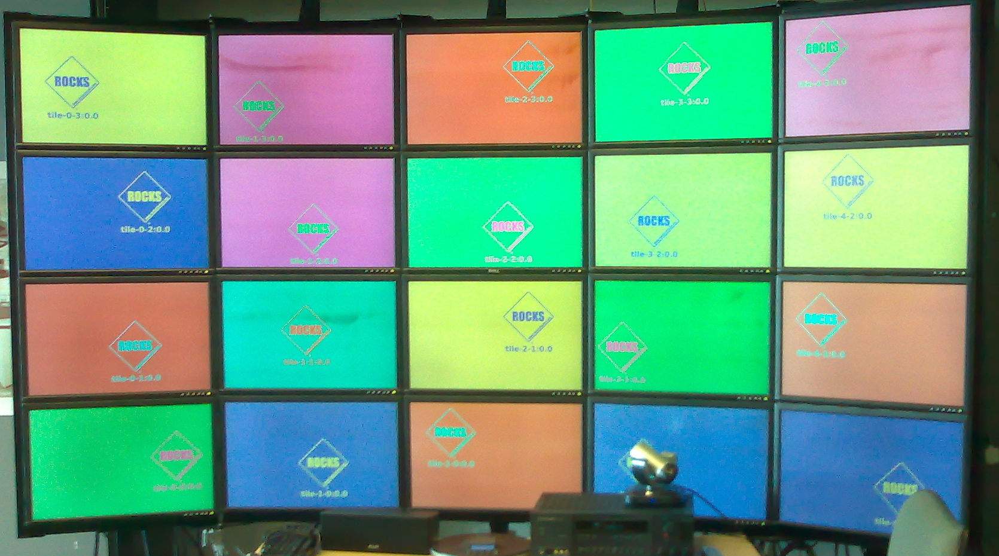
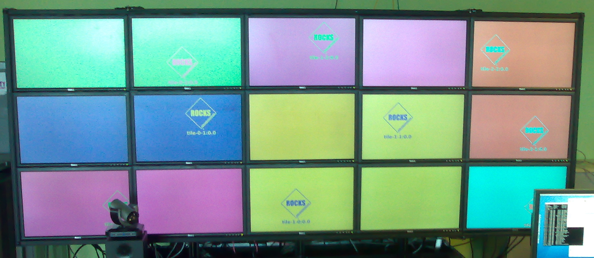

Viz Roll: Users Guide: 
| ||
|---|---|---|
| Prev | Chapter 3. Installing | Next |
# insert-ethers |
Select 'Tile' as the appliance type and boot the tile node on the bottom left (the bottom node in the first column). Once a node has completed the installation and reboot it will start an X11 session but may have the incorrect video resolution, this will get fixed later on.
After all the tiles in the first column are installed, exit 'insert-ethers' by hitting the 'F8' key. Then, restart insert-ethers with the flag:
# insert-ethers --cabinet=1 |
Now install the bottom node in the second column.
Repeat the above process for each node in each column. Once all the nodes have been installed your wall should look like the following.

The Viz Roll supports the construction of walls with either a single LCD display per machine or multiple displays per machine. Multiple displays can be grouped together as a single X11 display using TwinView with or without Xinerama, or each display can be an independent X11 display. The choice of whether to group a host's physical displays together or not is controlled by the rocks sync tile command.
The default configuration for Rocks is a single physical display per machine. If this is your configuration skip to the next section. If your wall has multiple displays per host you will need to create an XML an XML file that describes the physical layout of your wall. The syntax is very simple and the XML itself maps to the dimensions of the wall. Each col tag describes a vertical column of the wall, with the nodes listed top to bottom. The very first col section lists the Tile nodes comprising the far left side of the wall, and from there the next section moves to the right.
 | When connecting a single video card to two display you must connect the primary video connector to the LCD above (or to the left) of the secondary connector. This is a requirement of the SAGE software. |
This simplest method to create you layout XML is to start from scratch rather than modifying the defaults as is documented in the non-twinview section above.
<wall> <col> <display host="tile-0-0:0.0"/> <display host="tile-0-1:0.0"/> <display host="tile-0-2:0.0"/> </col> <col> <display host="tile-0-0:0.1"/> <display host="tile-0-1:0.1"/> <display host="tile-0-2:0.1"/> </col> <col> <display host="tile-1-0:0.0"/> <display host="tile-1-1:0.0"/> <display host="tile-1-2:0.0"/> </col> <col> <display host="tile-1-0:0.1"/> <display host="tile-1-1:0.1"/> <display host="tile-1-2:0.1"/> </col> <col> <display host="tile-2-0:0.0"/> <display host="tile-2-1:0.0"/> <display host="tile-2-2:0.0"/> </col> </wall> |
After you update your tilelayout XML, now apply it to the database:
# rocks add tile layout layout.xml |
Finally, reconfigure your tiles:
# rocks sync tile mode=meta |
This will generate xorg.conf files for each tile node, copy them to the tile nodes, then restart the X11 server. Once the Tile nodes restart X11 your wall should look like the following picture. Note that each display is labeled according the connected Tile node.

Completed installation for a TwinView visualization wall.